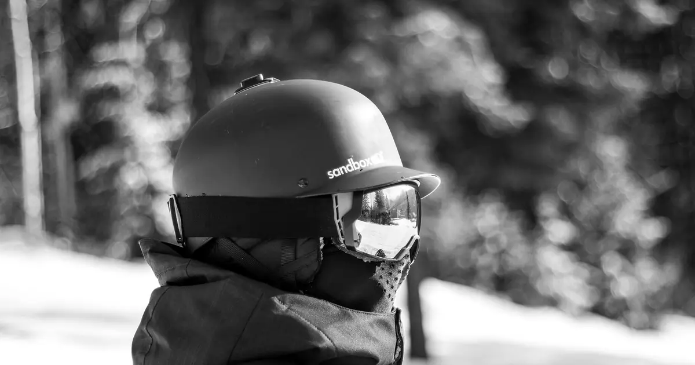
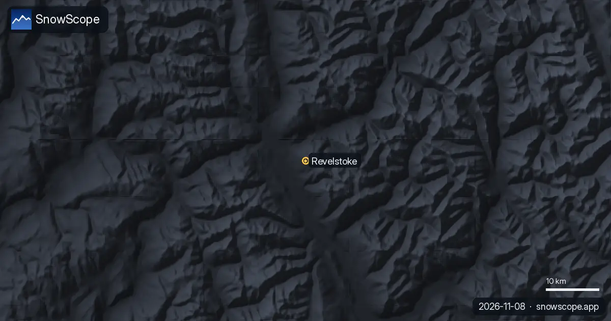

Revelstoke de haut en bas : comment la neige change sur la plus longue descente d'Amérique du Nord
Revelstoke Mountain Resort a la plus longue descente verticale de toutes les stations d'Amérique du Nord, environ 1 710 m des remontées du haut jusqu'au côté ville du mont Mackenzie. En une descente, on traverse trois climats. Cet article suit cette descente depuis le sommet, avec notre historique de neige (un modèle de 46 hivers passés, pas les bulletins de la station) à chaque arrêt.
Consultez les prévisions neige en temps réel pour Revelstoke Mountain Resort sur l'application SnowScopeHauteurs de neige, alertes poudreuse et carte 3D, gratuitement.
Départ en haut : une neige épaisse et durable
Près du sommet, à 2 224 m dans notre série, le maximum habituel est d'environ 256 cm et il arrive tard, en avril. Un hiver typique y compte déjà environ 101 cm en novembre, 153 cm en décembre et 186 cm en janvier, puis environ 206 cm en février, 225 cm en mars et 229 cm en avril. Il y a de la neige au sol environ 258 jours dans un hiver typique, de début octobre (vers le 2) à fin juin (vers le 25). Au moins 50 cm restent pendant 28 semaines neuf hivers sur 10 : là-haut, la question n'est pas de savoir s'il y a de la neige, mais combien est fraîche et si elle est stable.

À mi-descente : encore un vrai hiver
À mi-pente, 1 369 m, le manteau est un peu plus mince mais reste épais : un maximum habituel d'environ 205 cm, avec environ 119 cm en décembre, 154 cm en janvier, 175 cm en février et 188 cm en mars. La neige baisse plus tôt au printemps, à environ 117 cm en mai. Avec au moins 50 cm pendant 25 semaines neuf hivers sur 10, c'est la tranche des longues descentes tranquilles.
En bas : la vallée compte aussi
La surprise de Revelstoke, c'est le bas. À 514 m, près de la vallée du Columbia, notre modèle donne encore un maximum habituel d'environ 184 cm, avec environ 99 cm en décembre et 167 cm en mars, et au moins 50 cm pendant 22 semaines neuf hivers sur 10. La différence arrive au printemps : le bas garde en général environ 142 cm en avril mais seulement environ 65 cm en mai, et sa neige fond vers le 30 mai, près d'un mois avant le haut. En fin de saison, prévoyez de redescendre en télécabine plutôt que de skier la dernière partie.
Ce qui change en descendant
À part les cuisses, trois choses changent. La température : on peut quitter une neige froide et sèche en haut et trouver une neige plus molle et lourde plus bas, sur la même piste. La visibilité : les nuages restent souvent sur le haut quand la vallée est dégagée, ou l'inverse. Et la lumière : par une courte journée d'hiver, une descente complète avec des arrêts prend du temps. La plus longue piste balisée, Last Spike, mesure 15,2 km.
Une tendance dans l'autre sens
Contrairement à beaucoup de stations, Revelstoke a gagné de la neige dans notre série. À mi-pente, le maximum médian est passé d'environ 197 cm sur nos quinze premiers hivers à environ 221 cm sur les quinze derniers, et près du sommet d'environ 245 cm à environ 276 cm. L'hiver dernier, 2025-26, a été le plus enneigé des 46 à toutes les altitudes : environ 334 cm près du sommet, 276 cm à mi-pente et 242 cm en bas. Un grand hiver ne fait pas une règle, mais la série récente a été généreuse.
Avant de vous lancer
La station a ouvert le 21 décembre 2007 et couvre environ 1 263 hectares desservis par 5 remontées, d'une télécabine rapide à des télésièges. Au-delà des remontées, du ski en chenillette et en hélicoptère se pratique aux alentours. Les grosses chutes de neige signifient un vrai risque d'avalanche : lisez le bulletin d'Avalanche Canada avant de quitter les pistes damées.
Conseils aux skieurs
- Pour la neige la plus épaisse et la plus longue saison, skiez le haut de la montagne.
- Séjours de printemps : le haut garde en général sa neige jusqu'en juin ; redescendez en télécabine.
- Prévoyez une descente complète avec de la marge par les courtes journées d'hiver.
- La neige sur notre carte ne veut pas dire que la station est ouverte : vérifiez les remontées sur le site officiel.
Références et crédits
- Wikipédia (en), « Revelstoke Mountain Resort » (consulté le 8 novembre 2026) : dénivelé, sommet et bas, surface, remontées, Last Spike, ouverture, ski en chenillette et héliski. en.wikipedia.org/wiki/Revelstoke_Mountain_Resort
- Avalanche Canada, bulletins d'avalanches. avalanche.ca/
À propos de ces chiffres
Chiffres de neige : historique SnowScope, 46 hivers passés (1980-81 à 2025-26) à trois altitudes de la station, un modèle du passé corrigé de l'altitude (une estimation pour une zone, pas les bulletins de la station). Remontées, pistes et accès : les sources ci-dessous, vérifiées à la date indiquée.
Bulletins d'avalanche officiels: Avalanche Canada
Citer ce bulletin
Pour la recherche, l'enseignement ou la presse : chiffres et graphiques réutilisables librement sous CC BY 4.0 avec cette citation.
SnowScope (2026), Revelstoke de haut en bas : comment la neige change sur la plus longue descente d'Amérique du Nord, https://snowscope.app/blog/fr/2026/11/revelstoke-top-to-bottom-snow-on-the-longest-descent.html, consulté le 2026-11-09
SnowScope (Atlas Labs). (2026, November 9). Revelstoke de haut en bas : comment la neige change sur la plus longue descente d'Amérique du Nord. SnowScope snow reports. https://snowscope.app/blog/fr/2026/11/revelstoke-top-to-bottom-snow-on-the-longest-descent.html
BibTeX
@misc{snowscope2026revelstoketoptobottomsno,
author = {{SnowScope (Atlas Labs)}},
title = {Revelstoke de haut en bas : comment la neige change sur la plus longue descente d'Amérique du Nord},
year = {2026},
month = nov,
howpublished = {\url{https://snowscope.app/blog/fr/2026/11/revelstoke-top-to-bottom-snow-on-the-longest-descent.html}},
note = {Published 2026-11-09 16:08 UTC; accessed 2026-11-09}
}· CC BY 4.0 · Méthodes, données et outils →
Suivre Revelstoke Mountain Resort
Gratuit : un message quand la neige arrive, et la météo chaque matin.